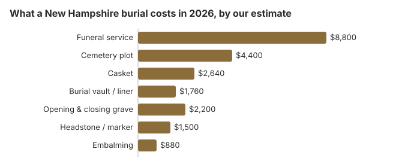

Burial Costs in New Hampshire (2026)
A New Hampshire burial comes to $20,300 to $24,800 on our estimates once the cemetery's charges are counted with the funeral home's. The service is the biggest item at about $8,800, followed by the plot at about $4,400 and grave opening at about $2,200. This page sets out each charge, the state's setback rules for a family burial ground, town-paid burial under RSA 165:3, and the state veterans cemetery in Boscawen.
New Hampshire Burial Charges, Item by Item
| Charge | New Hampshire estimate | Low to high |
|---|---|---|
| Funeral service | $8,800 | $6,600 – $11,440 |
| Cemetery plot | $4,400 | $2,200 – $8,800 |
| Casket | $2,640 | $880 – $7,040 |
| Burial vault / liner | $1,760 | $800 – $10,000 |
| Opening & closing grave | $2,200 | $500 – $3,000 |
| Headstone / marker | $1,500 | $500 – $5,000+ |
| Embalming | $880 | $500 – $1,500 |
About the New Hampshire numbers: they come from our cost model, and we did not call New Hampshire funeral homes or cemeteries for them. Compare them with your quotes; they are neither a quote nor professional advice. The method is in our method with the limits in our disclaimer.

With the cemetery's fees counted alongside the funeral home's, a New Hampshire burial generally totals $20,300 to $24,800, depending on the casket, the plot and the marker the family picks.
Lowering a New Hampshire Burial Bill
Places where a New Hampshire family can cut the bill:
- Get prices line by line. Every New Hampshire funeral home has to give you a General Price List. Cemeteries are not covered by that rule, so ask each one for its written charges for the grave, the opening and the marker.
- Ask about winter. Some New Hampshire cemeteries do not open graves while the ground is frozen and hold the body in a receiving tomb until spring; ask whether that adds a storage or winter charge.
- Call the town. Many New Hampshire towns own and run their own cemeteries, and churches keep others; the town clerk or cemetery trustees can quote lot prices.
- Look beyond the nearest cemetery. Plot prices are set by each cemetery, so a town cemetery a short drive away may charge less than the one closest to home.
Town and Church Cemeteries in New Hampshire
Town, church and other nonprofit cemeteries set their own plot prices, and they can differ a good deal from a commercial memorial park's. Our table puts a New Hampshire plot at about $4,400, so get the town or church cemetery's written price before you settle on a private one.
Burial Resources
- Funeral Consumers AllianceNonprofit consumer advocacy for funeral pricing
- Headstone & Monument GuideCosts, types, and buying tips
- Green Burial OptionsEco-friendly and natural alternatives
- Best Online Casket RetailersCaskets bought online often cost less
- Best Burial InsuranceCompare plans to cover burial expenses
Compare Funeral Costs
- Average Funeral Cost in 2026National cost breakdown with real prices
- Cremation vs. Burial Cost ComparisonSide-by-side price comparison to help you decide
- Funeral Cost BreakdownEvery line item explained: know what you're paying for
- Cheapest Funeral OptionsLower-cost alternatives, with typical price ranges
- Direct Cremation: Most Affordable OptionNFDA 2023 median $2,645 with a family-supplied container (latest available)
- How to Compare Funeral PricesStep-by-step guide to getting the best price
New Hampshire Burial Choices
Frequently Asked Questions
How much does a New Hampshire burial cost?
On our figures the New Hampshire pieces are: funeral service about $8,800, plot about $4,400, casket about $2,640, vault about $1,760, opening and closing about $2,200 and a headstone from $500 to $5,000. Together that is $20,300 to $24,800.
Must a New Hampshire grave have a vault?
No state law requires one, but many New Hampshire cemeteries do under their own rules, and a cheaper liner often satisfies them. Get the cemetery's rule in writing before you buy a container.
How can a New Hampshire burial cost less?
Skipping embalming, the viewing and the funeral home service, which is what a direct burial means, gives the lowest burial price most homes list. A casket from an outside seller also lowers the bill, and the FTC Funeral Rule bars the funeral home from charging to accept it. A town-run cemetery may also charge less for the lot.
Can a New Hampshire family bury on its own land?
New Hampshire allows burial on private land, but RSA 289:3 sets distance rules: no new burial ground within 100 feet of a dwelling, school or store without the owner's consent, or within 50 feet of water or a state highway, unless local zoning says otherwise. For plots, RSA 290:24 passes ownership to a written designee or heirs, with the probate court settling disputes. Ask each cemetery for written prices.
What does everything add up to in New Hampshire?
Put together, our New Hampshire estimate is $20,300 to $24,800. Extra to that are cash advances the funeral home pays for you, such as certified death certificates, an obituary and clergy fees, which it pays on your behalf and bills at cost.
Is a green burial possible in New Hampshire?
Ask each cemetery. Some may allow burial without embalming or a vault and in a biodegradable container, while others will not. Our green burial guide lists the questions to raise. New Hampshire law allows burial on private land as long as the state's setbacks or local zoning are met (RSA 289:3).
More for New Hampshire
What New Hampshire requires after a backyard burial
A New Hampshire burial on private land outside an established cemetery follows local zoning. Where a town has no rules, the state's setbacks apply. The grave also stays with the land: when the property is sold or otherwise transferred, the burial site's location has to be recorded in the deed to the new owner (RSA 289:3; checked October 29, 2026).
- Building near a grave: where no local rule applies, no new construction, excavation or building is allowed within 25 feet of a known burial site or a cemetery's boundary. That holds even if the grave was never recorded in a deed.
- Before you choose this: a family burial ground can limit later uses of the land and may affect a future sale, so it is worth raising with whoever may inherit or buy the property.
New Hampshire burial oversight and town help
The New Hampshire Office of Professional Licensure and Certification (603-271-2152) licenses funeral homes and takes complaints about them. Cemeteries may answer to someone else, often the town's cemetery trustees, so ask who runs the one you are considering.
The Funeral Consumers Alliance leaves New Hampshire off its list of nine funeral-director states. Families here can therefore carry out a burial on their own, with a disposition permit and within the cemetery's rules or the setbacks for a private burial ground.
A burial needs the disposition permit. If the family decides on cremation instead, New Hampshire requires a 48-hour wait unless death was from a contagious disease, plus a medical examiner's certificate (RSA 325-A:18).
Town help
When a person receiving local assistance dies, the town or city welfare officer must provide a decent burial or cremation at public expense, and the town may recover the cost from the estate or liable relatives (RSA 165:3). Ask the town welfare office before buying a lot. Social Security pays $255 once, to an eligible spouse or child, not to the cemetery, and must be claimed within two years.
Veterans
New Hampshire has no national cemetery. The New Hampshire State Veterans Cemetery in Boscawen, north of Concord (603-796-2026), buries eligible veterans, with the grave, opening and closing and marker at no cost to the family (source: VA National Cemetery Administration).
New Hampshire burial steps
- Get written prices from two cemeteries as well as two funeral homes; the plot, opening and marker are billed apart from the service.
- Ask whether the cemetery opens graves in winter, and what holding the body until spring costs.
- If the person was on town assistance, speak to the welfare officer before buying anything.
- For a veteran, ask the Boscawen cemetery what it needs, usually starting with the DD214.
- Complain to the licensing office at 603-271-2152 if a funeral home's prices were misstated.